NTU L2
Created Thursday 09 August 2012
Heat transfer resistance of a heat exchanger without phase change based on the concepts of Number of Transfer Units (NTU)
1. Purpose of Model
This wall model intends to provide a geometry-dependent heat transfer resistance supporting tube-like arrangements like counterflow, parallel flow and cross flow tube bundles.
Determination of steady state heat flow rate using NTU-method as described in [2]. To cope with storage effects in the solid wall the wall is divided into two storage volumes introducing two closed-system energy balances.
2. Level of Detail, Physical Effects Considered and Physical Insight
2.1 Level of Detail
Referring to Brunnemann et al. [1], this model refers to the level of detail L2 because the system is modelled with the use of balance equations, which are spatially averaged over the component.
2.2 Physical Effects Considered
- Heat transfer through complex shell and tube geometry based on integral, steady state energy balancing
2.3 Level of Insight
Heat exchanger type
- Pure counter flow
- Pure parallel flow
- Pure cross flow
- Cross counter flow
- (1,2) - Tube bundle heatexchanger: one external and two internal passes
3. Limits of Validity
- This model does not support phase change.
- steady state operation at both side and the separating wall
- constant fluid properties with respect to time and spacial extension
- applying spacial averaged heat transfer coefficients
- the only heat exchange is between hot and cold fluids
- no axial conduction along the tubes
- Pressure loss is neglected
- Kinetic and Potential energy are neglected
4. Interfaces
In the parameter dialog a number of inputs is expected, which interface the corresponding fluid volumes:
- Inlet temperature at each side
- Pressure at each side
- Inlet specific heat capacity at each side
- Mass flow rate at each side
- heat transfer coefficient at each side
- Geometry parameters
5. Nomenclature
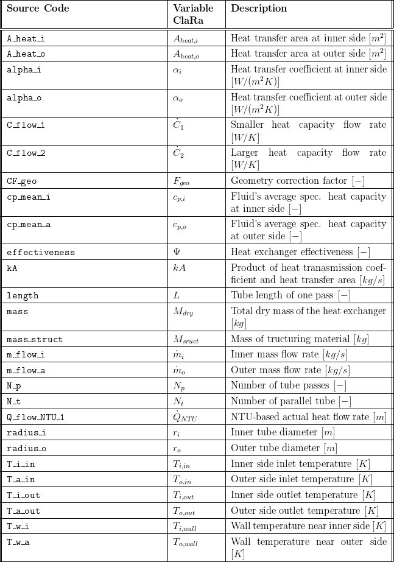
6. Governing Equations
6.1 System Description and General model approach
Assumptions
In general the NTU method applies some severe simplifications
- steady state operation at both side and the separating wall
- constant fluid properties with respect to time and spacial extension
- applying spacial averaged heat transfer coefficients
- the only heat exchange is between hot and cold fluids
- no axial conduction along the tubes
To cope with transient operation a simple approach is applied:
- two 0D energy balances for closed systems are applied to model the energy storage in the walls. There exact geometric position in flow direction of the solid states can not be
Taking these simplifications into account the following remarks for the usage can be given:
- the model approach is accurate for steady state operation, i.e. load changes with sufficiently slow transients will be modelled with small errors
- nearly constant fluid properties can be assumed for pure liquids. heat exchangers operating with gases or liquids near the saturation line will lead to lower accuracy
6.2 General Model Equations
Basic equations for all HEX:
In the following the indices 1 and 2 correspond to the smaller and larger heat capacity rate, respectively. The heat capacity rates are defined as follows:
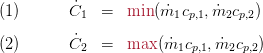
Starting from a steady-state energy balance for the side with the smaller heat capacity rate

The maximum heat flow rate is defined by the temperature difference at the inlets of both fluids and the smaller of the two heat capacity rate:
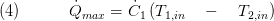
The quotient of is called effectiveness:
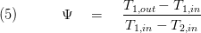
This dimensionless quantity, ranging from 0 to 1 may be calculated for specific geometry depending from the heat capacity rates at both sides and the product kA (heat transmission coefficient * heat transfer area)
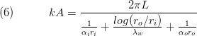
herein, 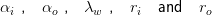 characterising the heat transfer coefficient at the inner and outer fluid side, the thermal conductivity of the wall material and the inner and outer tube diameter. Furthermore, we define the ratio of heat capacity rates:
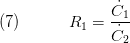
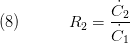 ; 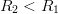
The product kA is used to determine the "Number of Transfer Unit"
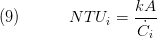
After integrating the energy balances for a differential element of a heat exchanger, we obtain
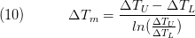
so that the energy balance can be expressed as
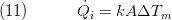
Substituting for 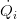 and 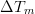 from Equation 3 and 10, respectively, it follows that
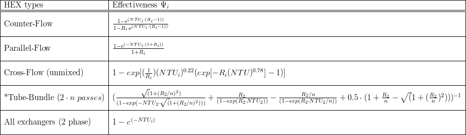
Restrictions of the VDI tube-bundle definition :
- it is only defined for 2*n tube passes
- it is only valid for the shell side!!
For the sake of simplicity and in order to allow easy implementation of new geometry additional to the ones in the table above a simple equation for approximating a wide variety of geometries which is performed by the replaceable model heatExchangerType, see section 2.3 level of Insight for supported geometries. Doing so we get a corrected, geometry-dependent NTU equation, i.e. equation (9) is changed to:
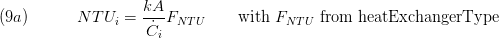
Knowing the effectiveness from the geometry-specific equations we can combine equation (3) and (5) which yields:
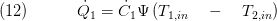
The last equation allows the calculation of the overall heat flow rate in the heat exchanger from inlet quantities of both sides, thereby avoiding the need of a spatially averaged temperature difference.
However, the above equations are valid only for steady state operation. In order to cope with the energy storage effect of the heat exchanger walls, the solid material of the heat exchanger (figure below: a)) is virtually molten (figure below: b)) and divided into equal-sized control volumes, see figure below - sub-figure c).
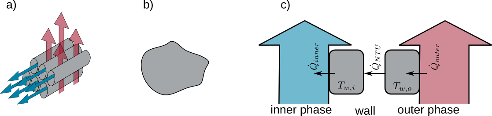
The energy balances for the two halves of the simplified wall look as follows:
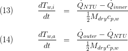
In eq. (13) and (14) 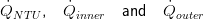 denote for the steady state flow from eq. (12), and the heat flow rates passing the inner and outer volume border, respectively. Applying this simple model approach the two fluid sides of the heat exchanger are decoupled which is an important feature for transient simulations. Moreover, this decoupling has a stabilising effect from a numerical point of view.
7. Remarks for Usage
The module shall be coupled with 0D volume models. Thus, the NTU-based models refers to energy transport and storage in the walls only. Heat storage at both fluid sides and the convective heat resistance are handled in the corresponding fluid volume models. The wall model is structurally independent of fluid models, i.e. it can be coupled with an arbitrary volume model.
8. Validation
9. References
[1] Johannes Brunnemann and Friedrich Gottelt, Kai Wellner, Ala Renz, André Thüring, Volker Röder, Christoph Hasenbein, Christian Schulze, Gerhard Schmitz, Jörg Eiden: "Status of ClaRaCCS: Modelling and Simulation of Coal-Fired Power Plants with CO2 capture", 9th Modelica Conference, Munich, Germany, 2012
[2] Verein Deutscher Ingenieure: "VDI Heat Atlas", chapter Ca: 'Calculation of Heat Exchangers' (in German), 9th edition, Springer 2002
10. Version History
01.06.2012 - Version 0.1 - Friedrich Gottelt, XRG Simulation
17.08.2012 - Version 0.2 - added the equations 6-11 and a table with equations to determine various heat-exchanger types - Ala Renz, XRG Simulation
Backlinks: ClaRa:Components:HeatExchangers:HEXvle2gas L3 1ph BU ntu ClaRa:Components:HeatExchangers:HEXvle2vle L3 1ph BU ntu ClaRa:Basics:ControlVolumes:SolidVolumes:Fundamentals:HeatExchangerTypes:CrossCounterFlow ClaRa:Basics:ControlVolumes:SolidVolumes:Fundamentals:HeatExchangerTypes:GeneralHeatExchanger ClaRa:Basics:ControlVolumes:SolidVolumes:Fundamentals:HeatExchangerTypes:CounterFlow ClaRa:Basics:ControlVolumes:SolidVolumes:Fundamentals:HeatExchangerTypes:ParallelFlow ClaRa:Basics:ControlVolumes:SolidVolumes:Fundamentals:HeatExchangerTypes:CrossFlow ClaRa:Basics:ControlVolumes:SolidVolumes:Fundamentals:HeatExchangerTypes:TubeBundle